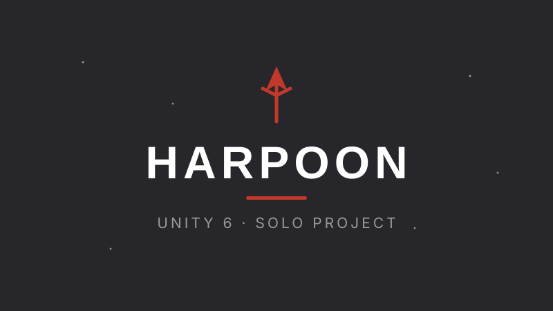
Harpoon
A solo game built in Unity 6, focused on tight movement.
3D world and character built with AI.
Project art made by real, talented people.
Designer and C# developer with a strong foundation in object-oriented development. I shipped a game on Steam with 25,000+ copies and now lead a 12 person team as technical lead, with AI tools as a natural part of my flow.
Prefer a normal page?
Build your character
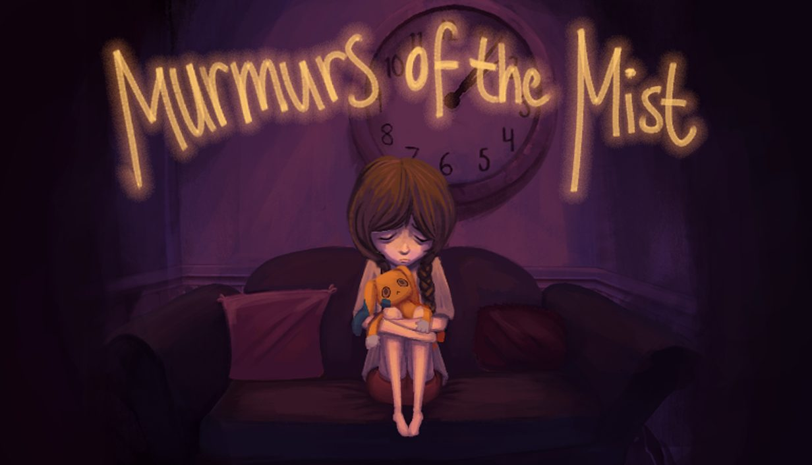
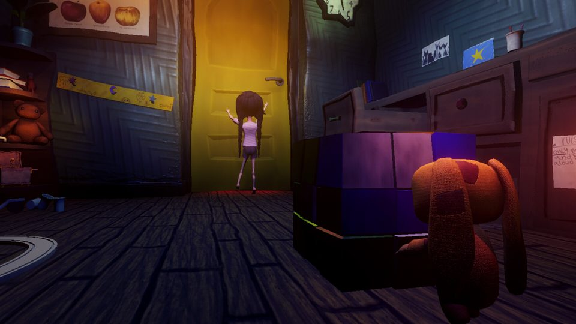
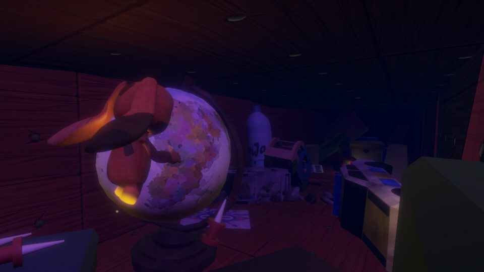
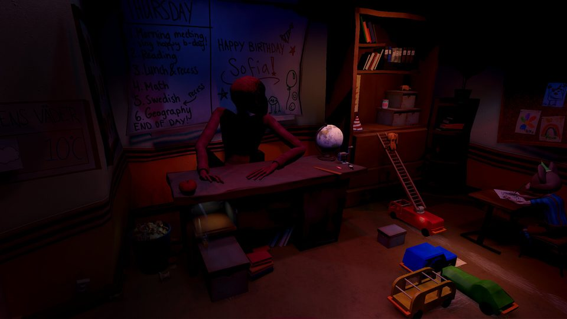
A narrative-driven horror puzzle game where you use the environment to solve each room. Take note of every detail, they help you uncover Sofia's story.
Role: Lead designer and programmer (CTO) on an 11 person team. I led programming and design from first prototype to release, and owned the technical foundation: architecture decisions, version control (Perforce) and build pipeline.
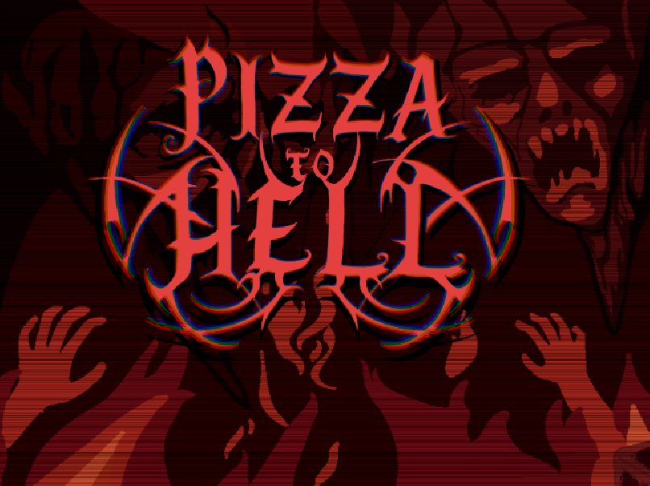
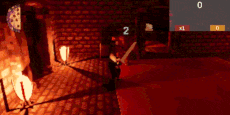
A PSX style action roguelite. You are a pizza delivery man fighting through a sin themed underworld to deliver a pizza to the Devil. Posture based combat staggers enemies for a finisher, with pizza topping build variety, a combo streak multi hit system and room to room runs.
Role: Technical lead and designer on my own company, Pizza to Hell HB. I lead a 12 person team as work lead, setting the workflow, running sync meetings and keeping systems modular and integration ready. I built the finisher system from scratch with clean integration between team owned modules, plus an event driven footstep system.
Most of these were built with teams of friends from uni.

A solo game built in Unity 6, focused on tight movement.
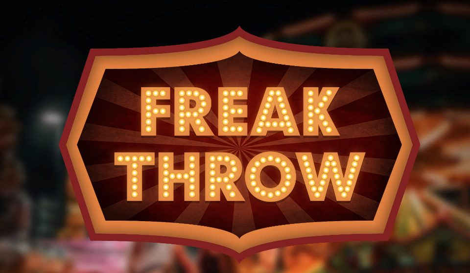
A vertical slice project. A horror carnival game with ramping intensity.
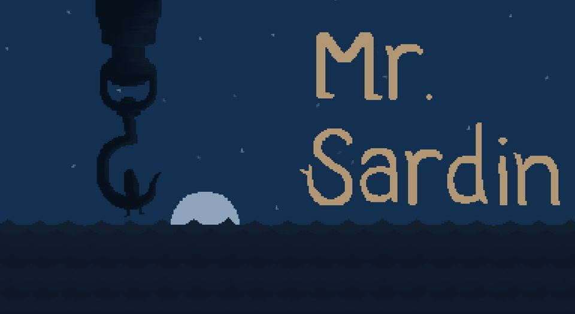
A fast paced parkour platformer with comedic art and narrative.
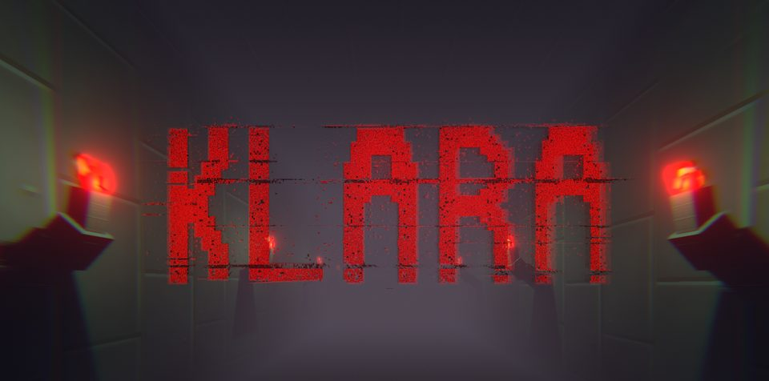
A game jam project. A 2.5D DOOM inspired horror game.
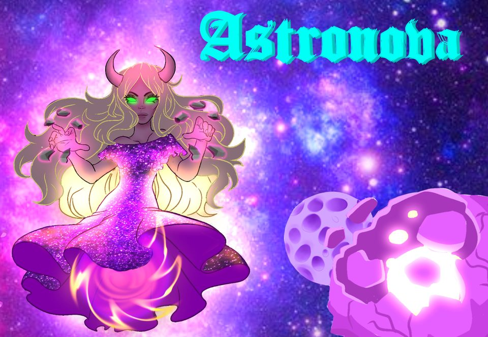
A Space Invaders inspired arcade shooter built around game feel.
Quality assurance on an unreleased title produced under a publisher in collaboration with several studios (under NDA), where Odd Raven owns the game's functionality and gameplay.
Led operations and external communication for LVL, Södertörn University's game development student association.
Remote analyst role carried out with a high level of independence and responsibility.
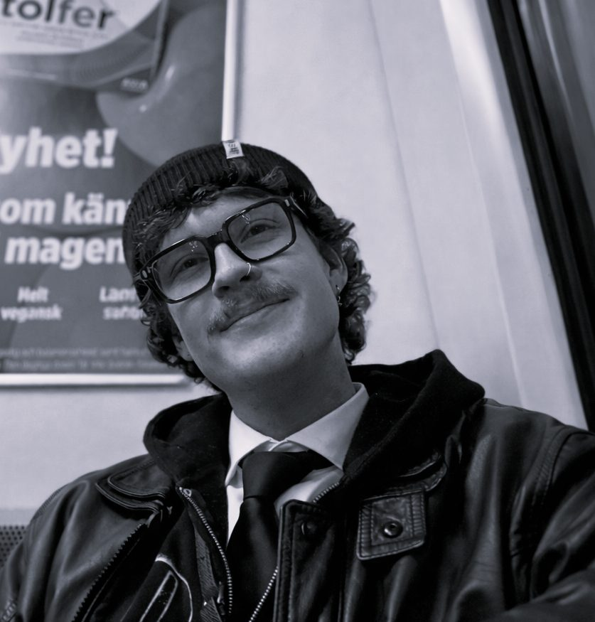
I am a recent graduate with a strong foundation in C# and object-oriented development. I like owning systems end to end, from architecture and gameplay code to polish and iteration, and I care about shipping finished results that hold together.
I shipped a game on Steam with 25,000+ copies and currently lead a 12 person team as technical lead. I work with AI tools as a natural part of my development flow, and a C# background makes the step to other languages short. I hold a BSc in Media Technology with a focus on game development.
I design and build the systems players feel, from player controllers and enemy AI to custom A* navigation and surface-crawling movement, in C# and Unity.
Object-oriented development with clean design patterns. I owned a shipped game's technical foundation: architecture decisions, version control and build pipeline.
I lead a 12 person team as technical lead and shipped a game as CTO. I set the workflow, run sync meetings and keep systems modular and integration ready.
Structured playtesting with clear repro steps and recorded playthroughs. I write actionable bug reports that speed up prioritization for the dev leads.
From the people I have shipped games with.
You kept us together and focused on getting the work done. You motivated me and made me believe in myself.
Your skills, ideas, and way of combining ideas prevented conflict, which made me feel safe and secure.
I am open to designer and developer roles, in games and beyond. Feel free to reach out, I would love to connect.
alfred.karl.jo@gmail.comUppsala, Sweden